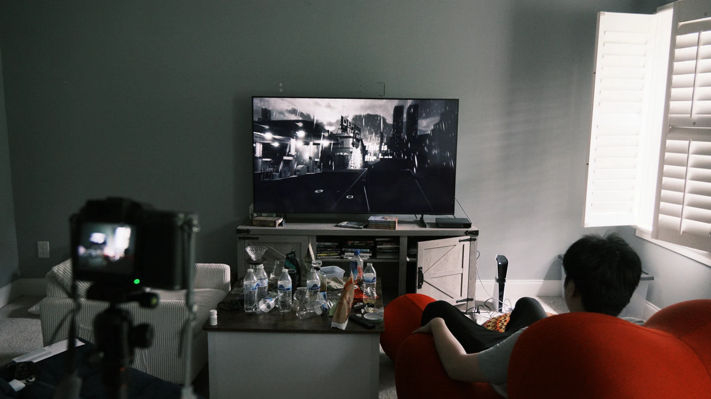
Image unavailableOpen original image The roomIn-game screenshot
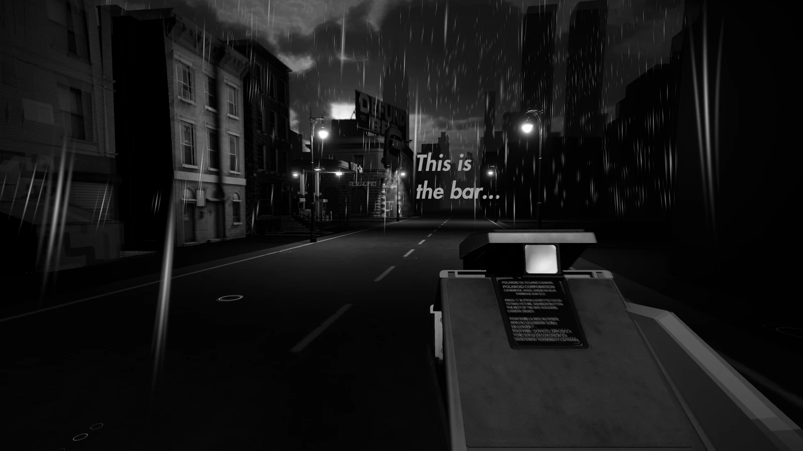
Image unavailableOpen original image After darkIn-game screenshot
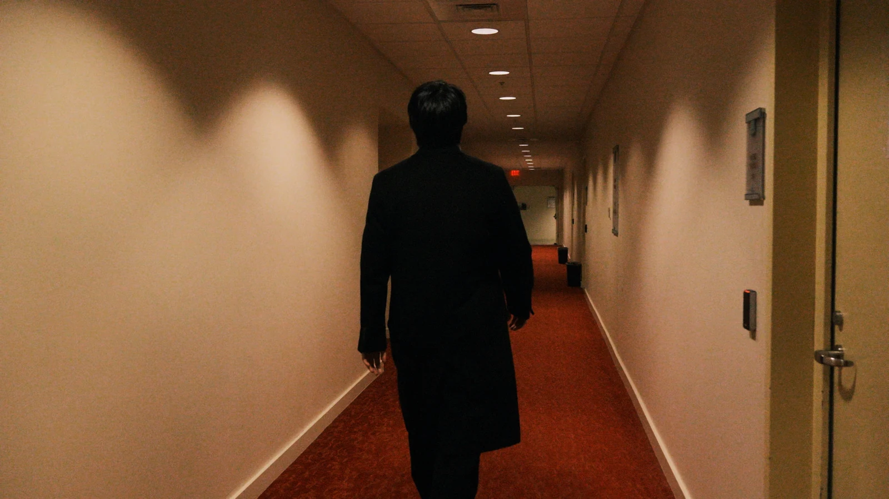
Image unavailableOpen original image In the hallwayIn-game screenshot
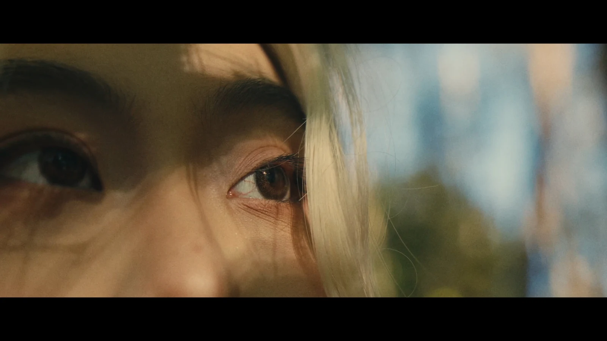
Image unavailableOpen original image In the detailsIn-game screenshot
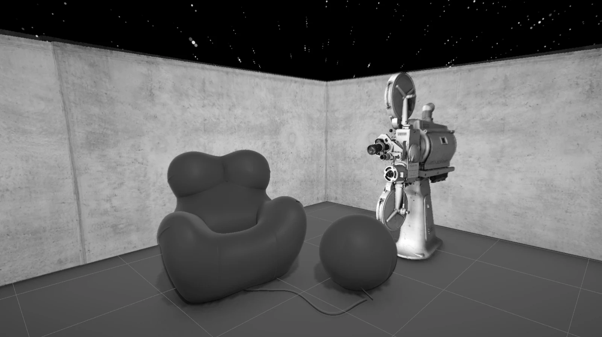
Image unavailableOpen original image The red chairIn-game screenshot
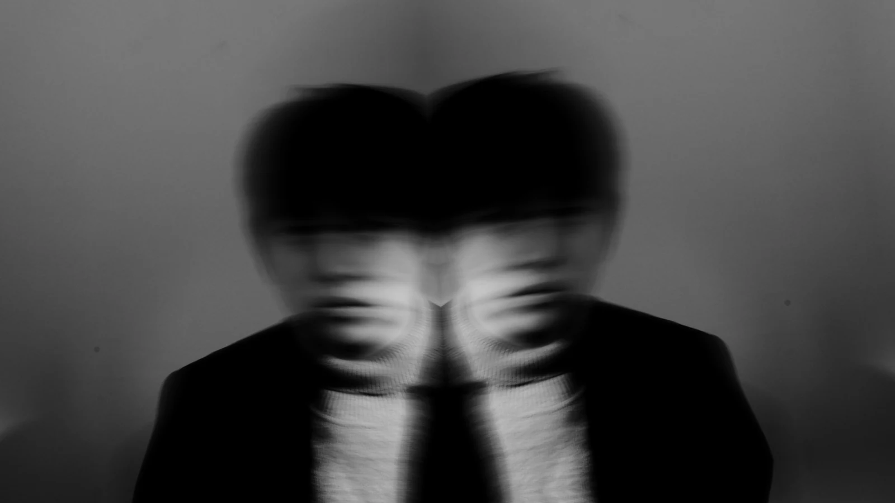
Image unavailableOpen original image Double exposureIn-game screenshot
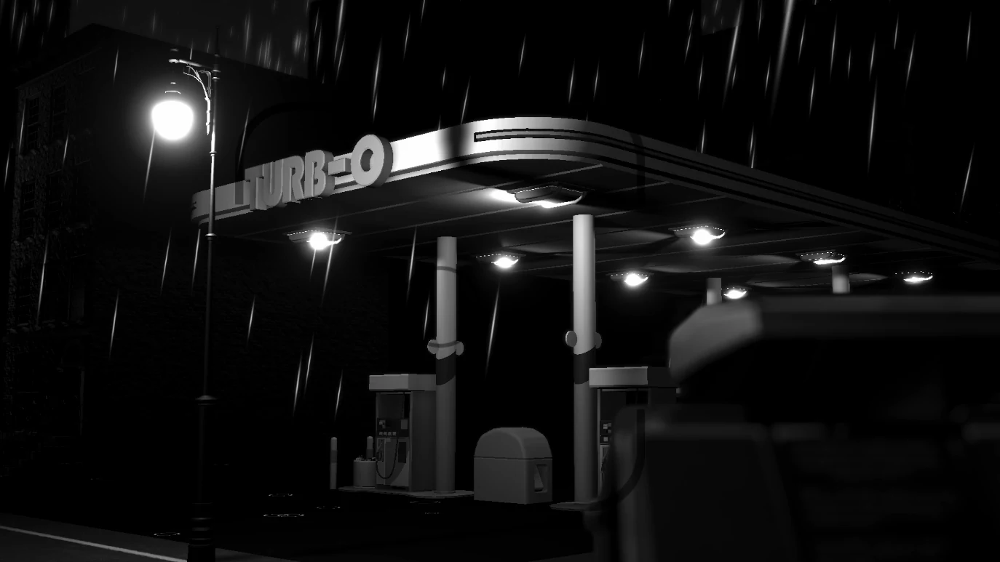
Image unavailableOpen original image The dinerIn-game screenshot
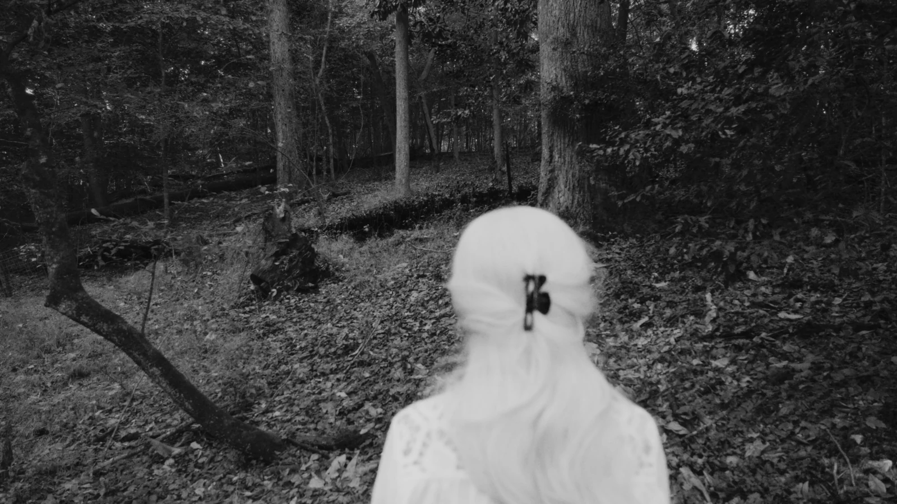
Image unavailableOpen original image Into the woodsIn-game screenshot
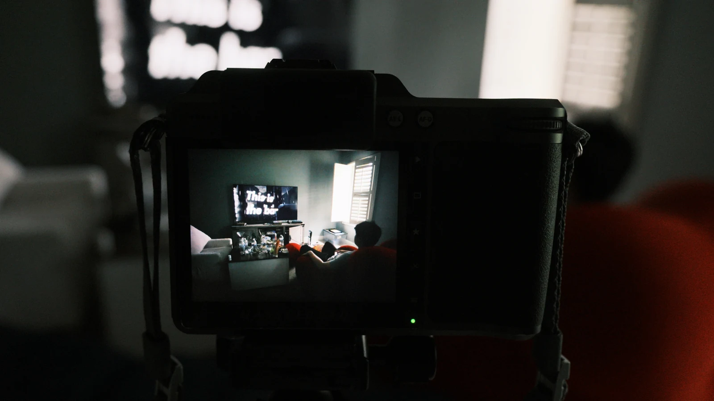
Image unavailableOpen original image The camera remembersIn-game screenshot

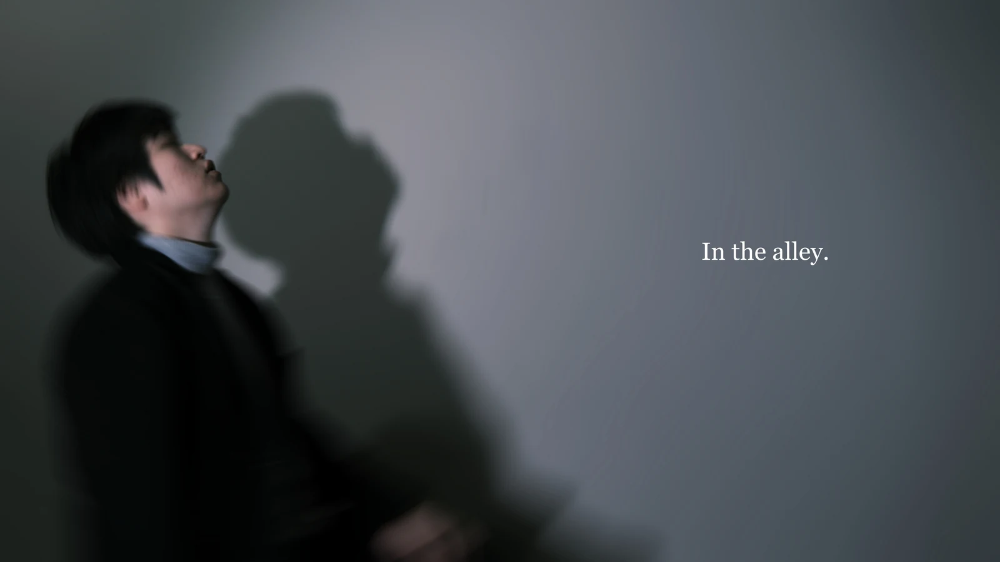
Image unavailableOpen original image In the distanceIn-game screenshot

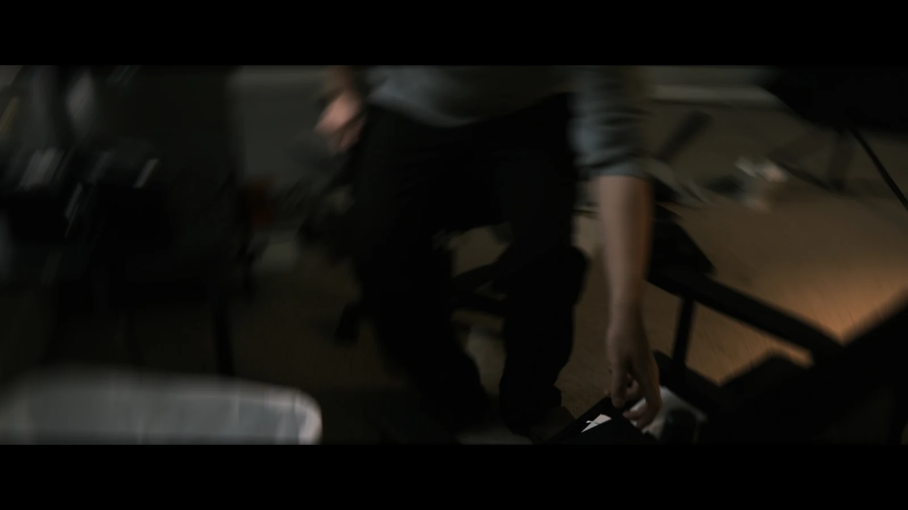
Image unavailableOpen original image A gestureIn-game screenshot
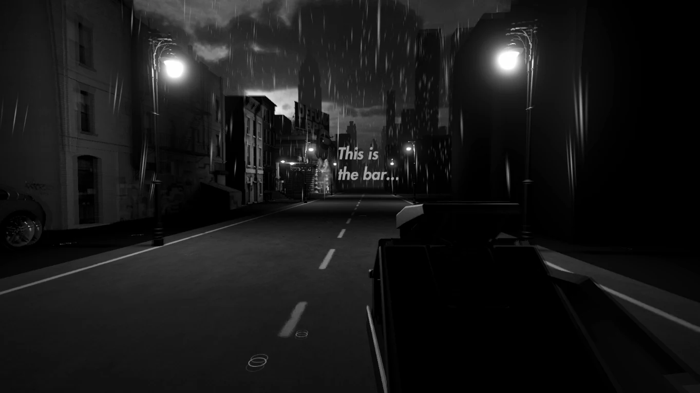
Image unavailableOpen original image Empty streetIn-game screenshot
 Image unavailableOpen original image
An open windowIn-game screenshot
Image unavailableOpen original image
An open windowIn-game screenshot


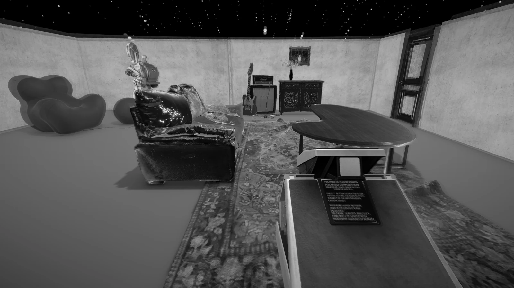
Image unavailableOpen original image A room reconstructedIn-game screenshot
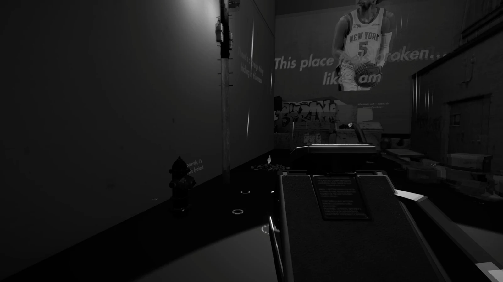
Image unavailableOpen original image The bathroomIn-game screenshot
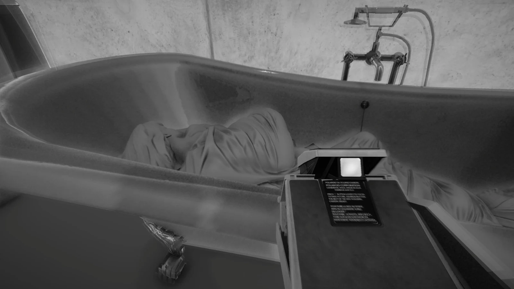
Image unavailableOpen original image What remainsIn-game screenshot